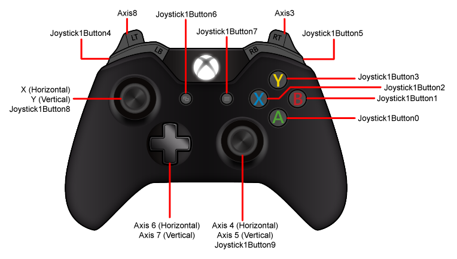
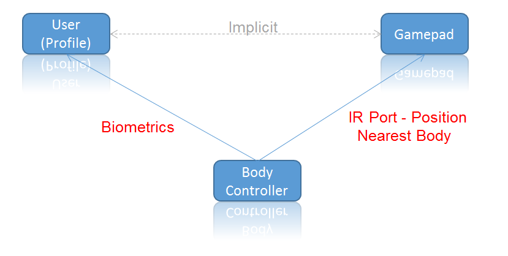
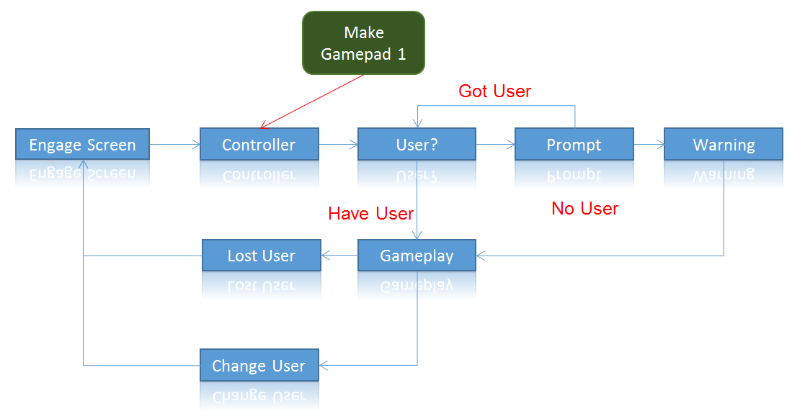

Xbox One Input
Xbox One Gamepad input can be managed using the normal Unity input systems. As with all Unity platforms Joystick 0 is the union of all Joystick input while Joystick 1 and on are individual Gamepads. Buttons on the Gamepads map to the Generic Joystick buttons. A central difficulty on Xbox One is determining which Gamepad belongs to which User and is mapped to which Unity Joystick. Unfortunately simply using Joystick 0 is not sufficient to solve all your input problems, you will need to learn about the XboxOneInput class.

Axis 3
For backwards compatibility with previous Unity versions, in addition to the axes shown above, the combined values of LT and RT are mapped to axis 3, as shown in the following table.
| Trigger Held | Value of Axis 3 |
|---|---|
| Neither | 0 |
| LT | 1 |
| RT | -1 |
| Both | 0 |
XboxOneKeyCode
On Xbox One, Unity provides an XboxOneKeyCode enum that maps JoystickButtons to more convenient Xbox One values. There are enum values for Joystick 0 and 8 Gamepads. You are free to use the more generic Joystick#Button# KeyCode enum. The platform-specific enum exists to explicitly document the mapping that Unity uses for Xbox One.
| XboxOneKeyCode | KeyCode |
|---|---|
| Gamepad1ButtonA | Joystick1Button0 |
| Gamepad1ButtonB | Joystick1Button1 |
| Gamepad1ButtonX | Joystick1Button2 |
| Gamepad1ButtonY | Joystick1Button3 |
| Gamepad1ButtonLeftShoulder | Joystick1Button4 |
| Gamepad1ButtonRightShoulder | Joystick1Button5 |
| Gamepad1ButtonView | Joystick1Button6 |
| Gamepad1ButtonMenu | Joystick1Button7 |
| Gamepad1ButtonLeftThumbstick | Joystick1Button8 |
| Gamepad1ButtonRightThumbstick | Joystick1Button9 |
| Gamepad1ButtonDPadUp | Joystick1Button12 |
| Gamepad1ButtonDPadDown | Joystick1Button13 |
| Gamepad1ButtonDPadLeft | Joystick1Button14 |
| Gamepad1ButtonDPadRight | Joystick1Button15 |
For convenience XboxOneInput provides GetKey and GetKeyDown methods that accept XboxOneKeyCode values.
XboxOneInput
The XboxOneInput class provides platform-specific functionality that helps you work with the platform-specific aspects of Gamepads. You will need to familiarize yourself with this class as it is impossible to pass the Microsoft XRs without some use of this class.
Engagement
The most important concept to grasp is that of engagement. While the Xbox One system console does have the concept of an active user, you cannot assume that this user is the one that wants to play your game. Engagement is the process by which you determine that a particular user would like to play your game with a particular controller. Microsoft recommends you accomplish this task through the use of an engagement screen. This can be as simple as a screen that requires the user to press some input on a gamepad. You may need to bring this screen up at some future point during gameplay if your active user disengages for some reason, keep this in mind when designing your engagement flow.
To engage a user you ask the user to use a gamepad to generate some input. You can then map back from the button press to the Unity JoystickID that issued this button press. Once you have the Unity JoystickID you can use the XboxOneInput class to attempt to see if the Kinect Biometrics has mapped a user to the gamepad that generated this input.
The biometrics system maps a user profile to a gamepad using a position generated by the IR port on your gamepad and the nearest physical body controller that kinect knows about.

If Biometrics is not enabled, or if the user has the gamepad pointed away from the kinect (or the user does not have a kinect with his Xbox One) you will then need to ask the user to identify himself. Is recommended that you then bind this user to the gamepad that generated your input. Your engagement flow may look something as follows:

The flow reads as follows:
- From the engagement screen
- Get some input and map that to a Gamepad.
- Determine if that Gamepad has a User object attached to it using GetUserIdForGamepad. ** If so enter game play. ** If not use the UsersManager in the Users plugin to request a user be signed in providing the gamepad ID returned by GetControllerId( uint joystickId) to bind this gamepad and user together (as biometrics would do it so the next time you have to engage the user is set). *** If no user is selected, warn the user that save games will not work (See XRs for actual valid text) and enter gameplay *** If user selected enter gameplay.
During gameplay you must provide the user with a way to change their active user, and you will need to handle the case where the active user logs out.
Single Player Convenience
Since you have to be explicit about which controller the user is using you will need to support many gamepads all plugged in to the console and selecting input from one of them. Doing this in Unity can be fairly cumbersome. For single player games XboxOneInput provides a convenience mechanism that can help with this. XboxOneInput provides RemapGamepadToIndex( uint currentJoystickId, uint newJoystickId) that allows you to make any gamepad behave as if it was Joystick1. This allows you to:
- Create a joystick mapping keyed to Joystick 1 in the Unity input systems
- Engage the user.
- Remap whatever joystick he is using to Joystick 1.
- Proceed as if the user had picked up Joystick 1.
Controller Pulls
The XboxOneInput class provides an event to help detect when a Gamepad has been removed from the console.
XboxOneInput.OnGamepadStateChange += OnStateChange;
void OnStateChange(int index,bool isConnected)
{
// This is triggered when the gamepad state changes.
}
Most Xbox One games will have the concept of a primary or current user. If the gamepad that was disconnected belonged to this user then you will need to re-engage the user. The engagement process is one that helps map a user to a gamepad and is better explained in the Microsoft documentation.
Global Speech Commands
This class also exposes the Global Speech Commands API allowing your game to register for and react to Global Speech Commands such as:
- Xbox Play
- Xbox Pause
- Xbox Menu
- Xbox View
- Xbox Back
See the XboxOneInput Scripting documentation for the full API.
DeferSystemGestures
The Xbox One OS recognizes some specific gestures so the user can do things like go to the Home screen no matter what game they're playing.
If your game uses gestures, you should try to use ones that are not similar to the system gestures. If you must, you can use the
XboxOneInput.DeferSytsemGestures function to stop the OS from detecting the system gesture
for a certain period of time. This will ensure that your game's gestures don't get confused for system gestures and vice versa. Please
see the "Dealing with System Gesture Conflicts" section in the XDK docs for more details.